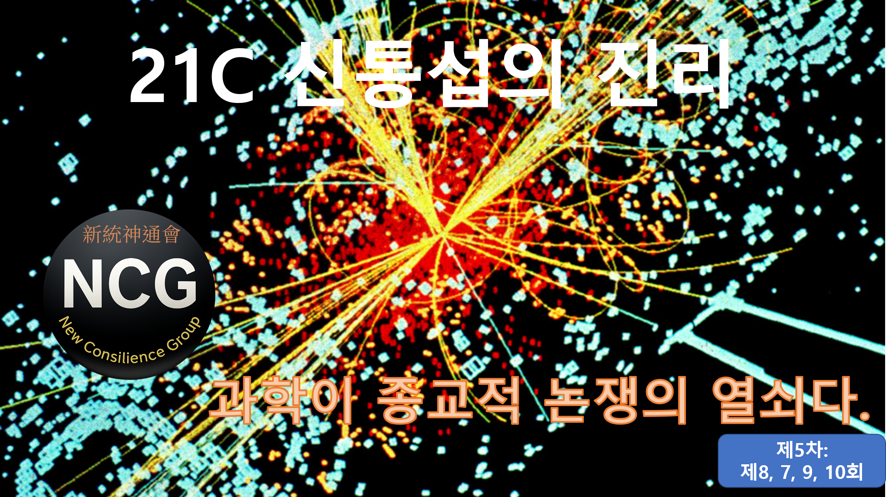

신통신통회 연재 · 제5차: “21C 신통섭의 진리”
과학이 종교적 논쟁의 열쇠다.
종교는 수천 년 동안 저마다의 교리로 수많은 논쟁을 벌여왔습니다.
그러나 그 질문들에 대해 끝내 원만한 합의에 이르지 못했습니다.
과학은 종교적 논쟁의 열쇠입니다.
신, 사후세계, 영혼, 구원이라는 질문을
신화가 아니라 검증 가능한 구조로 다시 묻습니다.
🧭 제5차 (제8 · 제7 · 제9 · 제10회)
2️⃣ 제7회
영원불멸한 무유는 ‘계(界)’를 바꾸며 존재한다.
무유는 사라지지 않는다. 단지 형상만 바꿀 뿐이다.
▶ 제7회 페이지 열기